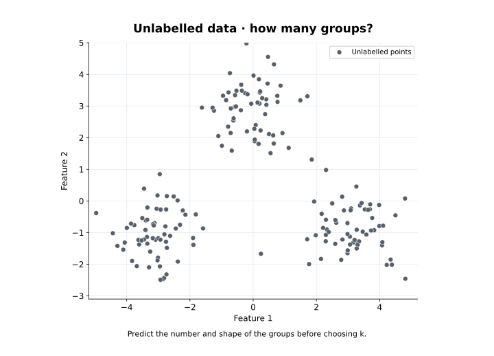
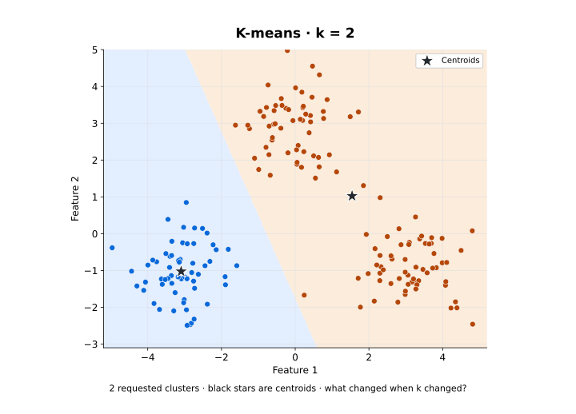
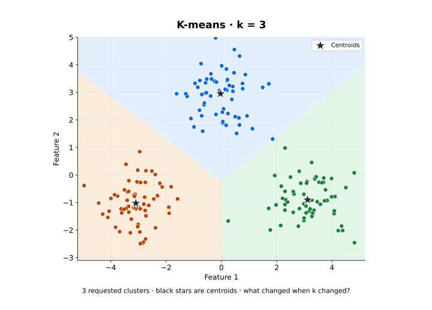
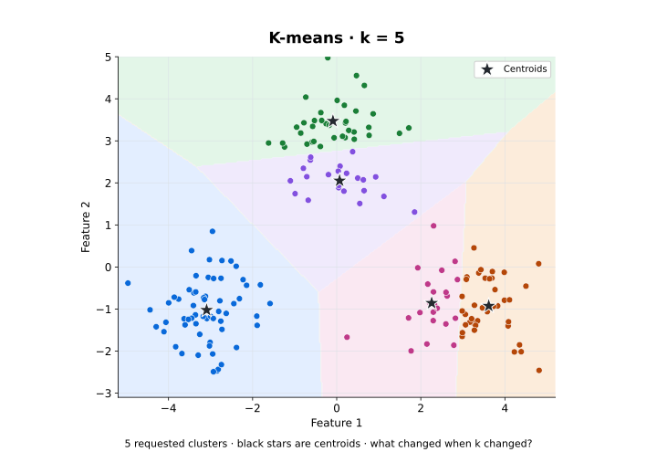
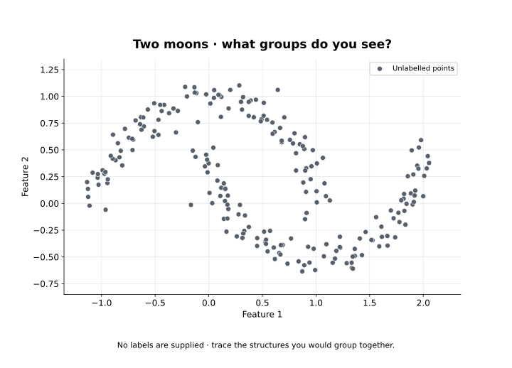
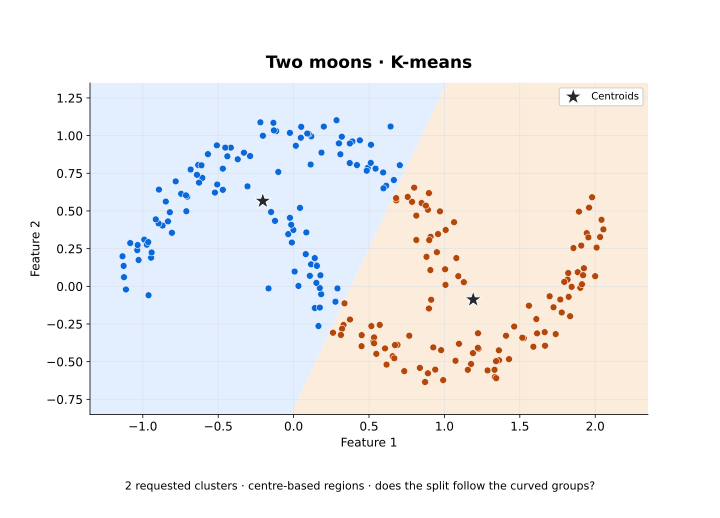
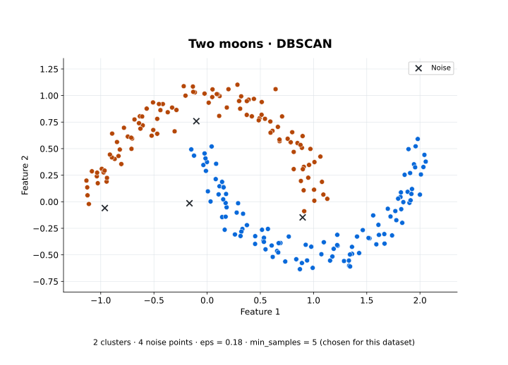

CT319 Artificial Intelligence · Week 10 · Clustering and recommendation
Week 10 — Clustering and recommendation
Can a machine discover useful structure when nobody tells it the correct groups?
This week
Last week every example came with a label, and the job was to predict the label of a new one. This week the labels are gone. The points stay exactly where they were. Only the answers have been taken away.
Can a machine discover useful structure when nobody tells it the correct groups?
Watch out for a trap in that question. An algorithm will always return groups. Whether those groups mean anything is a separate question, and the algorithm cannot answer it.
This week
This week covers five topics.
- Remove the labels — what we can still see once the class names are taken away.
- Move the centres — how K-means turns a chosen number
kinto groups, by reassigning points and moving centroids. - What if the groups are not blobs? — what happens when the data do not form compact groups around a centre.
- People who liked this also liked — how patterns of similarity and preference become recommendations.
- Useful pattern or misleading pattern — why a clustering result has to be interpreted, and why new users are hard to recommend for.
Keep three ideas separate as you read.
Remove the labels — what can the machine still see?
Remove the labels — what can the machine still see?
Last week every example came with a label. Take the labels away, and the picture hardly changes. That is exactly the problem.
Remove the labels — what can the machine still see?
Remove the labels — what can the machine still see?
You can still see two groups, and so can most people. But nobody told us there were two. That raises an uncomfortable question.
Who decided how many groups there are?
What actually changed
What actually changed
One important unsupervised task is clustering. Clustering puts examples into groups, based on how similar they are. The usual idea is that examples in the same cluster should be more similar to each other than to examples in other clusters.
The hard word in that sentence is similar.
Similarity still has to be designed
Similarity still has to be designed
Suppose we describe customers by their age, location, how often they buy, how much they spend and which products they view. Two customers can be close in age but buy very different things. Two others can live in different countries but buy almost the same things. Which pair counts as "similar" depends entirely on what we chose to record.
The algorithm only sees the representation we give it. So the question from Weeks 2 and 9 comes back.
What should count as similar for this problem?
Clustering can group customers, organise documents, split images into regions or flag unusual cases. But a cluster is not automatically a real-world category. Cluster 0, Cluster 1 and Cluster 2 are just names the algorithm gives its output. Working out what they mean is still our job.
Why this matters this week
Every method this week produces groups. The real work is deciding which groups you can trust.
Move the centres — how does K-means discover groups?
Move the centres — how does K-means discover groups?
Suppose some unlabelled points sit in three compact groups. We can see the groups, but the algorithm has not been told about them. K-means starts from a decision that we make, not the algorithm.
Choose
k— the number of clusters to request.
With k = 3, K-means starts with three candidate centres, called centroids. A centroid is the average position of the points assigned to it. K-means then repeats two steps.
Move the centres — how does K-means discover groups?

Move the centres — how does K-means discover groups?
K-means works best when each group forms a fairly compact region around a centre.
Predict before running
Suppose a centroid starts too far to the right. Where does it move once nearby points are assigned to it? And what happens if one distant point is assigned to it as well?
The centroid moves towards the points assigned to it, including the distant one.
from sklearn.cluster import KMeans
model = KMeans(n_clusters=3, random_state=42, n_init=10)
labels = model.fit_predict(X)
centroids = model.cluster_centers_fit_predict gives each point a cluster number. The numbers 0, 1 and 2 are only identifiers. They are not class names, and they mean nothing until somebody interprets them.
One dataset, three values of k
One dataset, three values of k
The data and the axes never change, and only
kdoes.
The demonstration uses 180 points in three compact groups. The points are generated the same way every time. Black stars mark the centroids that K-means finds.
One dataset, three values of k

One dataset, three values of k
k = 2 — too few | k = 3 — matches what we see |
|---|---|
 |  |
| Cluster sizes 60, 120. Two visible regions are merged into one. | Cluster sizes 60, 60, 60. Each region recovered exactly. |
Figure 4. At k = 2 the algorithm did not fail. It did exactly what it was asked, which was to produce two groups. Plots created for these pages by the clustering demonstration. No external image licence is used.
One dataset, three values of k

k = 5, the cluster sizes are 60, 38, 38, 22, 22. Two of the three regions are split down the middle. The points did not change. Only the number of groups we asked for did. Plot created for these pages by the clustering demonstration. No external image licence is used.Why you cannot pick k by the score
Why you cannot pick k by the score
It might seem easy to let the algorithm choose k by measuring how tight the clusters are. The usual measure is inertia. It adds up the squared distance from each point to its own centroid, so lower inertia means tighter clusters. Here are the values for this dataset.
k | Cluster sizes | Inertia |
|---|---|---|
| 2 | 60, 120 | 946.7 |
| 3 | 60, 60, 60 | 204.1 |
| 5 | 60, 38, 38, 22, 22 | 149.9 |
The lowest inertia belongs to k = 5, the setting that splits two good regions in half. Inertia keeps falling as k rises. With one cluster per point, it reaches zero.
The tightest clustering is not the most useful one. Choosing
kis a judgement, and it stays ours.
Why you cannot pick k by the score
K-means did not find the one true grouping at
k = 3. It produced a grouping based on four things we gave it.
Why this matters this week
The four things are the representation, the value of k, the starting centroids, and the assumption that groups form around centres. Change any of the four, and the answer can change too.
What if the groups are not blobs? — does every algorithm see the same structure?
What if the groups are not blobs? — does every algorithm see the same structure?
K-means works well when groups are compact regions around a centre. But real data does not have to look like that.
The second dataset has 220 points in two interlocking crescents. It is the same shape as in Week 9, generated with its own fixed settings.
What if the groups are not blobs? — does every algorithm see the same structure?

Centres against density
Centres against density
Ask K-means for two clusters, and it will give you two clusters.
Now compare K-means with DBSCAN. DBSCAN looks for dense, connected regions of points, instead of building groups around centres. It has two main settings. eps is the radius of the neighbourhood around each point. min_samples is how many points a neighbourhood needs before it counts as dense.
from sklearn.cluster import DBSCAN
model = DBSCAN(eps=0.18, min_samples=5)
labels = model.fit_predict(X)Centres against density
K-means, k = 2 | DBSCAN, eps = 0.18 |
|---|---|
 |  |
| Cluster sizes 110, 110. The boundary cuts across both shapes. | 2 clusters recovered, and 4 of the 220 points marked as noise. |
Figure 7. K-means did not break. It assumes a group is whatever lies nearest a centre, and that simply does not describe a crescent. Plots created for these pages by the clustering demonstration. No external image licence is used.
Centres against density
DBSCAN was never told there were two groups, but it found two.
Look at the right-hand panel. DBSCAN can also leave some points out of every group. Those four noise points are a valid result, not a failure.
The value eps = 0.18 was tuned to the size and spacing of these crescents. It is not a general setting. On a different dataset it would mean nothing.
A third view — hierarchy
A third view — hierarchy
Hierarchical clustering builds groups inside groups.
The agglomerative approach starts with very small groups and keeps merging them. The divisive approach starts with one big group and keeps splitting it. A dendrogram is a diagram that shows the order of these merges or splits.
A third view — hierarchy
k was chosen in advance. Where you cut the tree decides how many groups you get. Diagram created for these pages. No external image licence is used.A third view — hierarchy
kWhy this matters this week
Three algorithms, one dataset, three different answers, and none of them is wrong. Each one assumes something different about what a group is. So instead of saying "we clustered the data", say which assumption the method made.
People who liked this also liked — where do recommendations come from?
People who liked this also liked — where do recommendations come from?
Clustering asks which examples are similar. Recommendation asks a different question. Can patterns of similarity and preference predict what somebody will want next?
Recommendation can use similarity without first clustering users or items into groups at all.
People who liked this also liked — where do recommendations come from?
Here are five people, five films and two gaps.
| Film A | Film B | Film C | Film D | Film E | |
|---|---|---|---|---|---|
| Aoife | 5 | 4 | ? | 1 | ? |
| Ben | 5 | 5 | 4 | 1 | 2 |
| Carla | 4 | 4 | 5 | 2 | 1 |
| Darragh | 2 | 1 | 2 | 5 | 4 |
| Eimear | 1 | 2 | 1 | 4 | 5 |
What would you recommend to Aoife — and which rows gave you the evidence?
People who liked this also liked — where do recommendations come from?
Collaborative filtering uses patterns in many people's behaviour to estimate a preference that nobody has recorded yet.
Like Aoife, Ben and Carla rated Films A and B highly and Film D low. Both of them also prefer Film C to Film E. That is evidence for recommending Film C to Aoife. Notice what that evidence does not use. Nobody described what Film C is about.
This method is called collaborative filtering.
Two ways to use the same table
Two ways to use the same table
Two ways to use the same table
Recommenders can draw on two kinds of evidence. One is how people behave. The other is features that describe the items.
These are the two classic collaborative methods, but there are others. In both, the evidence comes from what people did, such as ratings, viewing or purchases. It does not come from descriptions of the items.
When description is available
Sometimes we do have item features, such as genre, director, cast, release year or language. Then a content-based recommender can find items similar to what a user already likes. A hybrid recommender combines both kinds of evidence.
Two ways to use the same table
A recommendation is both a prediction and a decision.
Why this matters this week
As a prediction, it estimates whether this user will click, watch, buy or rate an item highly, just as in Week 9. As a decision, it controls what the user gets to see in the first place. That has a consequence, which we come to at the end of this week.
Useful pattern or misleading pattern — what can go wrong?
Useful pattern or misleading pattern — what can go wrong?
A clustering is an output, not a discovery
The features, the scale of the numbers, the settings and the algorithm's assumptions all shape the groups that come back. K-means and DBSCAN can disagree about the same points and both be working correctly, because they look for different things.
Which assumptions make sense for this problem?
Finding four clusters does not prove that four kinds of customer exist in the real world.
Useful pattern or misleading pattern — what can go wrong?
Cold start
A new user has no ratings, no purchases and no viewing history. So a collaborative recommender has almost nothing to work with. A new item has the same problem, because nobody has interacted with it yet.
This is called the cold-start problem. Item features, or a few questions about the user's tastes, can provide some evidence. But the missing history is real, and no algorithm can make it up.
Preferences and context change
People's interests change, so old behaviour goes out of date. One account can also be shared by several people. A family profile with children's programmes, crime dramas, football and documentaries is not one person's taste. Averaging it describes nobody.
Every observed interaction has a time and a context. Treating all of them as equally current expressions of one person's preference is a modelling assumption, not a neutral default.
Recommendations change the next dataset
Recommendations change the next dataset
A recommender is not outside the process that creates its data. It is part of that process.
Recommendations change the next dataset
Recommendations change the next dataset
Recommendations influence what people see. So is the next dataset independent of the system that made the recommendations?
No. It records behaviour that happened after the system helped decide what was visible.
Why this matters this week
From Week 8 to Week 10 we moved from learning from data, to prediction with labels, to finding structure without labels. The algorithms changed every week, but the habits did not. Check the representation, name the assumptions, and ask what the evidence really supports.
The clustering demo
The clustering demo
Every step uses the same two datasets. So when something changes, you know it was caused by the algorithm or setting that changed.
📦 clustering_demo.py — shows every plot from this page, one step at a time.
python -m pip install numpy matplotlib scikit-learn
python experiments/week-10/clustering_demo.pyPress Space, the right arrow or the on-screen button to move on.
The clustering demo
Work through these steps, and make a prediction before each one.
Try it yourself
- Open
--mode blobs --k 3. Decide how many groups you would have asked for, just from looking at the points. - Run
--k 2and--k 5. For each one, say what the algorithm was asked to do before judging how well it did it. - Read the inertia printed in the terminal for all three runs. Notice that the lowest value does not give the best grouping.
- Switch to
--mode moonsand trace the two shapes before running anything. - Run
--mode moons-kmeans, then--mode moons-dbscan. Name the assumption that makes the difference. - Find the four noise points. Decide whether you would want an algorithm that is allowed to say "neither".
To save every plot on this page as a file, without opening a window, run this.
python experiments/week-10/clustering_demo.py --save-dir media/week-10Before Week 11
Before Week 11
Over the last three weeks the machine learned from data. First it learned with labels, then without them, then from patterns of behaviour. Each time, we mostly asked whether the result was accurate.
Accuracy is one question. When should anyone trust what the system did with it?
That is where Week 11 begins.
Quick revision
Quick revision
If you can answer these without reopening the page, you have the core of this week.
- [WK-10-01] What does an unsupervised learner receive that a supervised one does not, and what is it looking for instead?
- Why is “similar” a design decision rather than a property of the data?
- [WK-10-02] Describe the two steps K-means repeats, and what makes it stop.
- On the blob dataset,
k = 5has the lowest inertia. Why is it not the best answer? - Why does one distant point pull a centroid, and what does that imply about the shapes K-means suits?
- [WK-10-03] Why does K-means cut across the crescents, and what is DBSCAN doing differently?
- What does it mean that DBSCAN marked four points as noise, and why is that not a failure?
- What does a dendrogram record, and what does it let you avoid choosing in advance?
- [WK-10-04] What evidence does collaborative filtering use, and what does it not need?
- What is the difference between a user-based and an item-based approach to the same ratings table?
- [WK-10-05] What is the cold-start problem, and why can no algorithm solve it outright?
- Explain why a recommender's next dataset is not independent of the recommender.